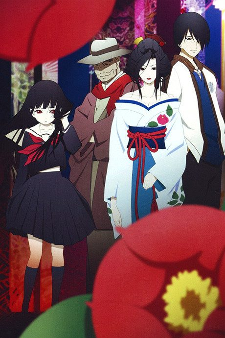

Hell Girl
地獄少女
A website that only opens at midnight lets people send someone they hate straight to hell, at the cost of their own soul.
An original anime, so there's no book to continue with.
7.2AniList score
—Animeter, no votes yet
90episodes, 4 seasons
Rate it or report where you stopped
4 seasons, 90 episodes
In airing order. Episode numbers on this site count straight through every season, so season 2 starts at episode 27.
1
2005 · TV
Hell Girl
Episodes1–2626 ep
2
2006 · TV
Hell Girl: Two Mirrors
Episodes27–5226 ep
3
2008 · TV
Hell Girl: Three Vessels
Episodes53–7826 ep
4
2017 · TV
Hell Girl: Fourth Twilight
Episodes79–9012 ep
Sources: AniList